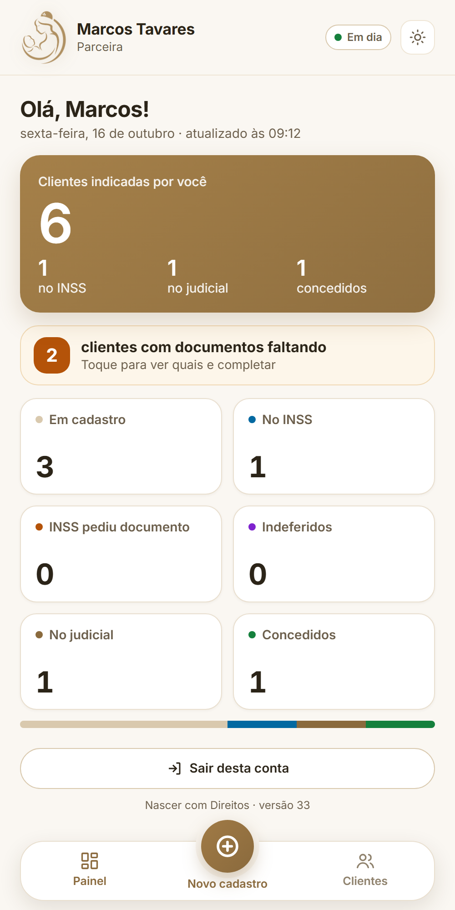
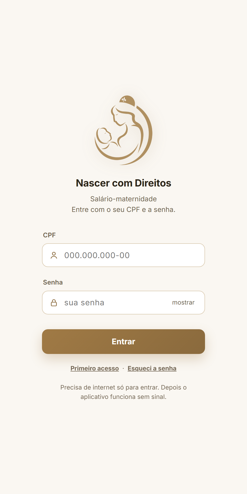
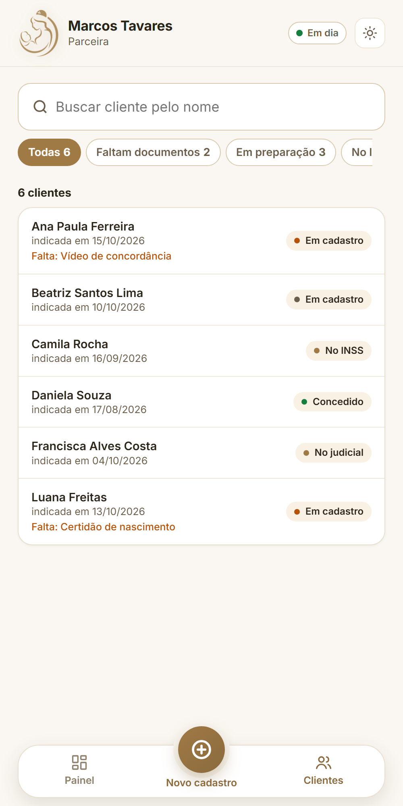
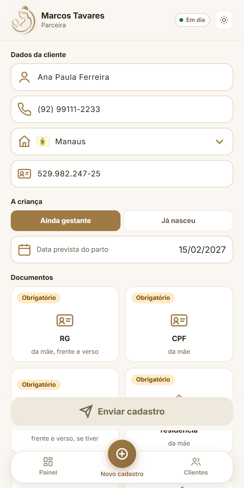
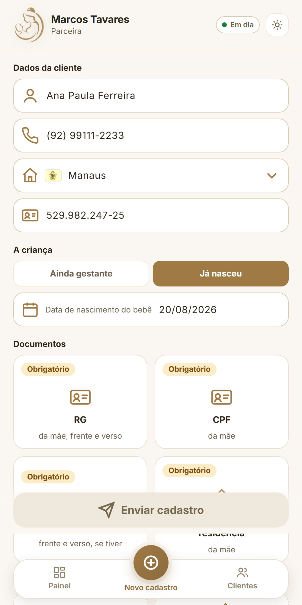
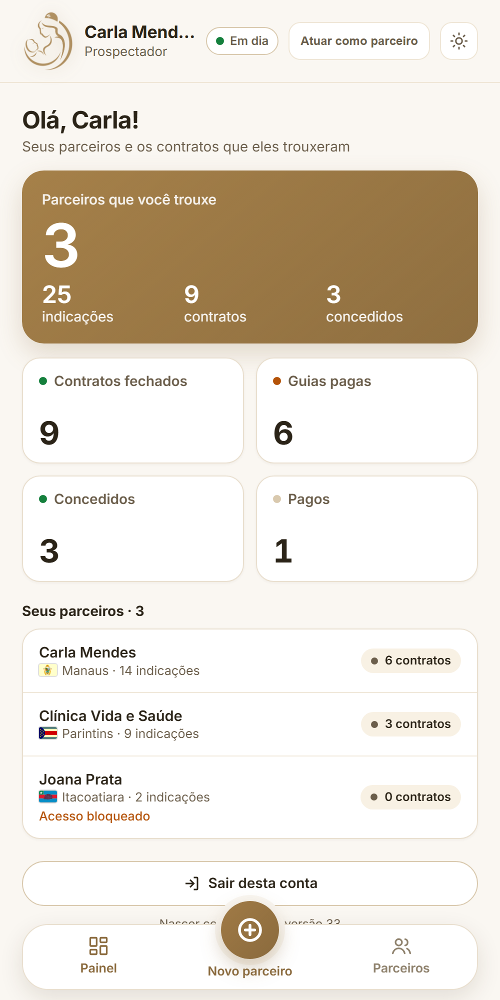
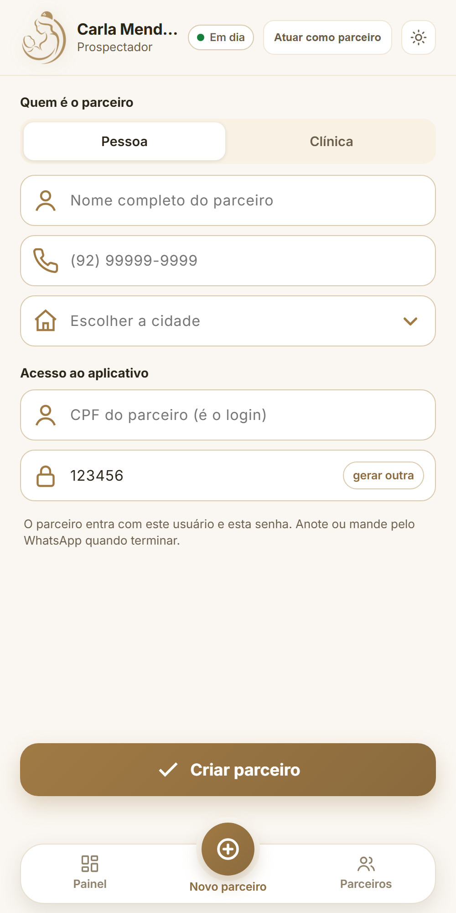
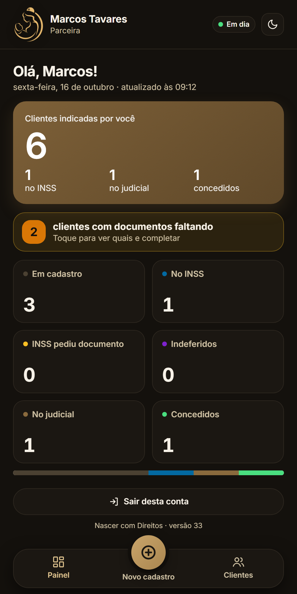

O aplicativo
Nascer com Direitos
O aplicativo que leva o salário-maternidade até cada mãe: cadastrar com os documentos, acompanhar cada caso e fazer a rede crescer, tudo pelo celular.

NASCER COM DIREITOSSalário-maternidade
O aplicativo que leva o salário-maternidade até cada mãe: cadastrar com os documentos, acompanhar cada caso e fazer a rede crescer, tudo pelo celular.

Parceiras e parceiros que indicam mães, clínicas parceiras e prospectadores que formam a rede.
Cadastrar a mãe com todos os documentos fotografados e enviar. Nada de ficar para depois, nada de se perder pelo caminho.
Android e iPhone. Funciona até sem sinal: o envio acontece quando a internet voltar.
Poucos botões, letras grandes e moldura para fotografar cada documento do jeito certo.
Entra com CPF e senha. Cada pessoa vê somente as mães que ela mesma cadastrou.
O cadastro chega na hora para a equipe que cuida do pedido, e a pasta da mãe já nasce organizada.






CPF (só números) e senha. Quem ainda não tem acesso toca em Primeiro acesso e aguarda a aprovação.
Cada cadastro feito pelo aplicativo é uma mãe a mais amparada nos seus direitos.
